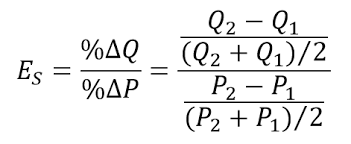

Ano ang Elastisidad?
- Paraan upang masukat ang pagtugon ng isang indibidwal sa pagbabago ng presyo.
- Bahagdan ng pagbabago sa dami ng demand ayon sa bahagdan ng pagbabago ng presyo.
- May limang uri ng elastisidad: Elastik, Di-elastik, Unitary, Ganap na Elastik, Ganap na Di-Elastik.
Elastik
- Coefficient: |E| > 1
- Mas malaki ang pagtugon ng Quantity Demanded/Quantity Supplied kaysa sa bahagdan ng pagbabago ng presyo.
- Halimbawa: Mga produktong maraming kapalit o kahalili tulad ng softdrinks.
Di-Elastik
- Coefficient: |E| < 1
- Maliit ang bahagdan ng pagtugon ng Qd/Qs kaysa sa bahagdan ng pagbabago ng presyo.
- Halimbawa: Mga pangunahing produktong walang kapalit tulad ng gamot.
Unitary
- Coefficient: |E| = 1
- Pareho ang bahagdan ng pagbabago ng presyo at bahagdan ng pagbabago sa dami.
Ganap na Elastik
- Coefficient: |E| = ∞ (infinity)
- Ang pagbabago sa presyo ay magdudulot ng walang hanggang pagbabago sa Qd/Qs (horizontal line).
- Halimbawa: Produktong handang bilhin o ibenta ng marami sa isang takdang presyo, tulad ng chocolate.
Ganap na Di-Elastik
- Coefficient: |E| = 0
- Hindi nagbabago ang quantity kahit magbago ang presyo (vertical line).
Price Elasticity Formula

← Back to Lessons